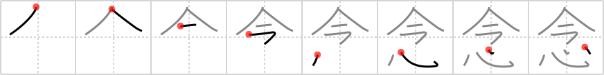

念
← →
wish

Reading:
On-Yomi: ネン
Heisig story:
Clock . . . heart.
Koohii stories:
1) [raulir] 8-4-2007(214): Someone wishing from the bottom of their heart that the clock would stop. A mid-life crisis perhaps.
2) [shaydwyrm] 28-6-2007(87): Remember in the Wizard of Oz when the tin man wished for a heart and the wizard gave him that dinky little clock instead?
3) [BlackMarsh] 16-2-2006(61): A wish is something that your heart desires right now.
4) [QuackingShoe] 6-7-2008(46): I wish with all my heart that I knew all the kanji now. This studying sucks!
5) [jabberwockychortles] 12-1-2010(17): I wish the clock would give me more time to do the things that my heart desires the most.